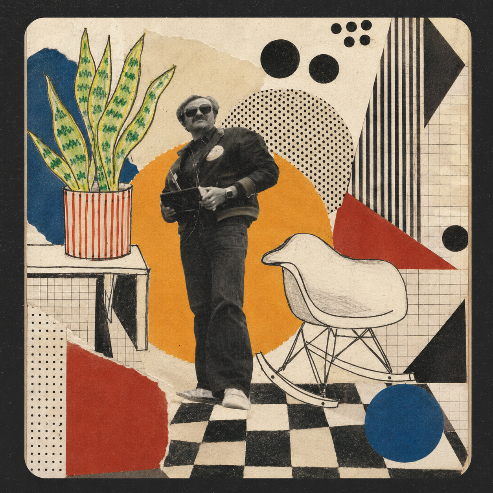
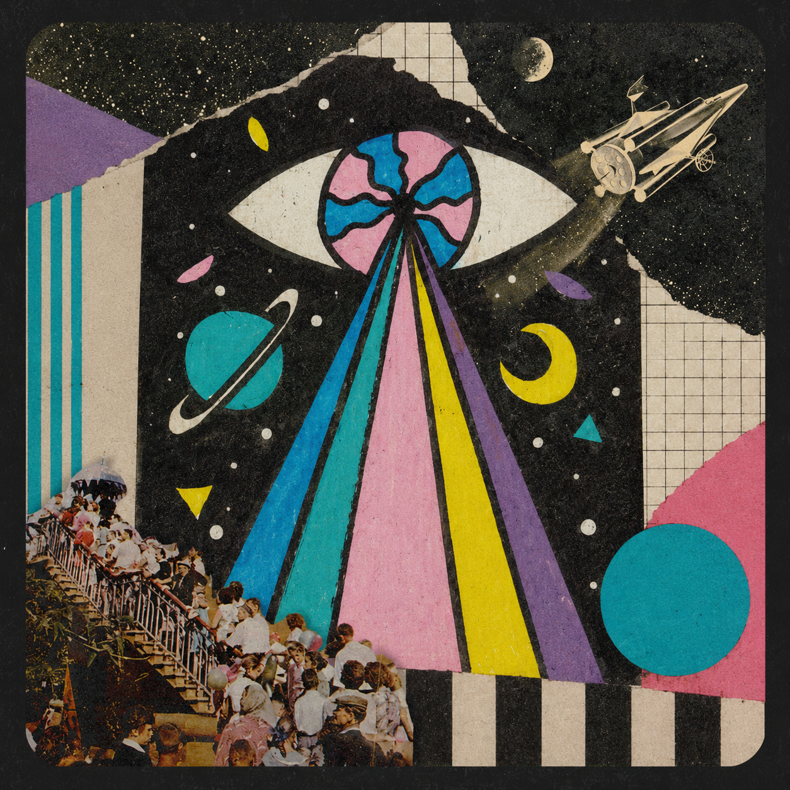
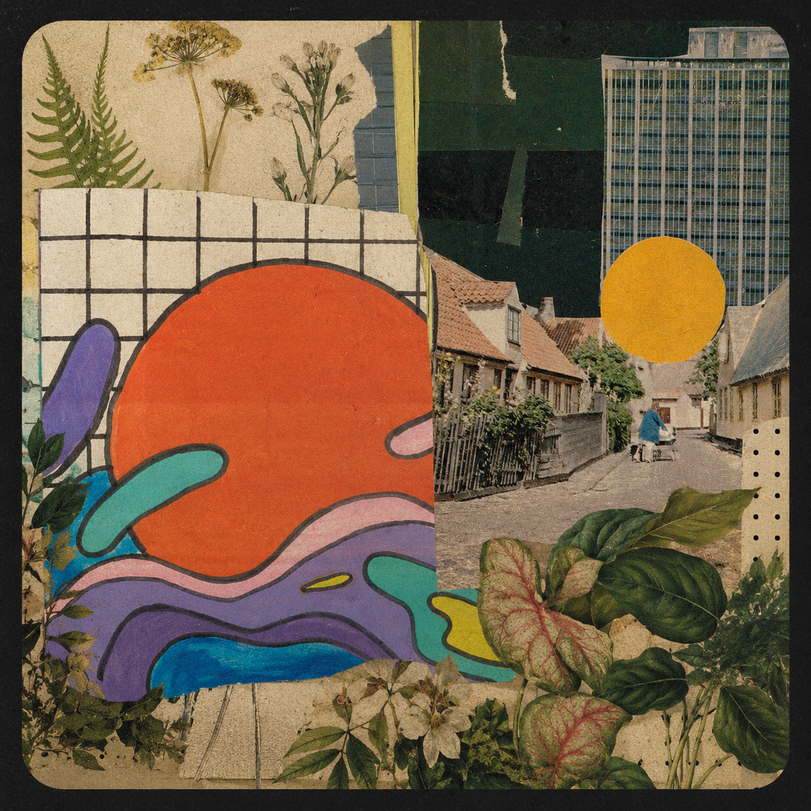
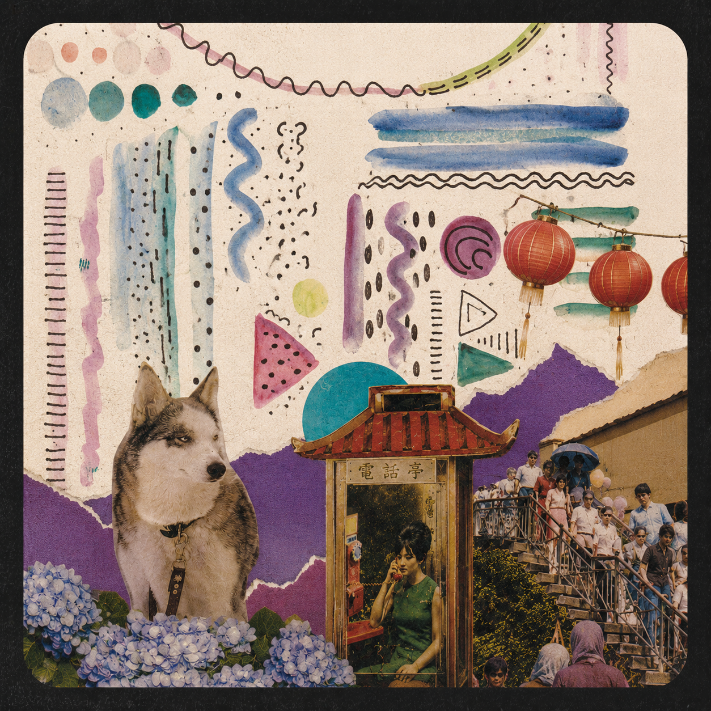
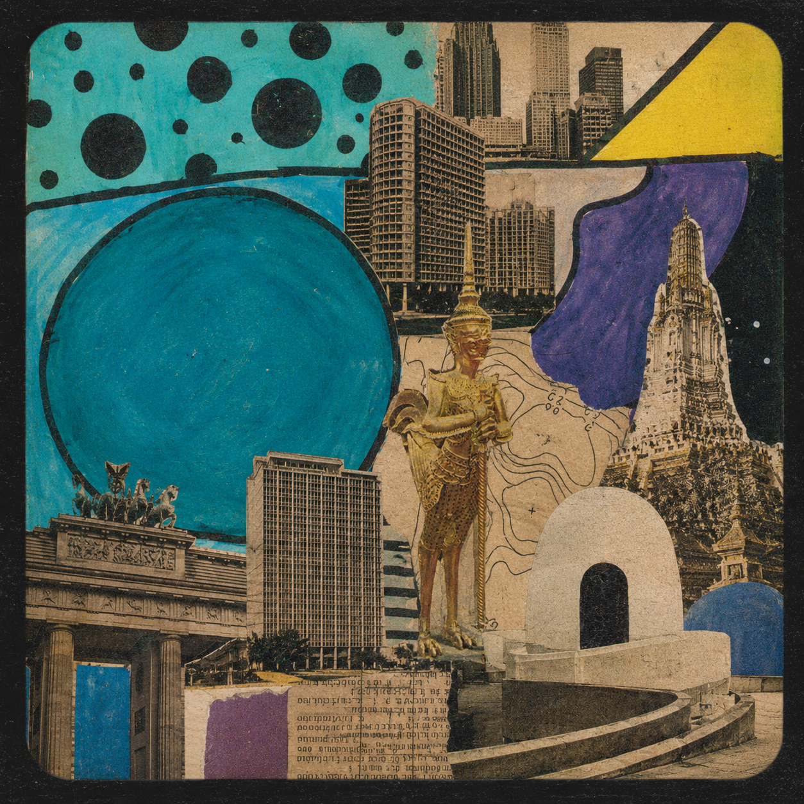
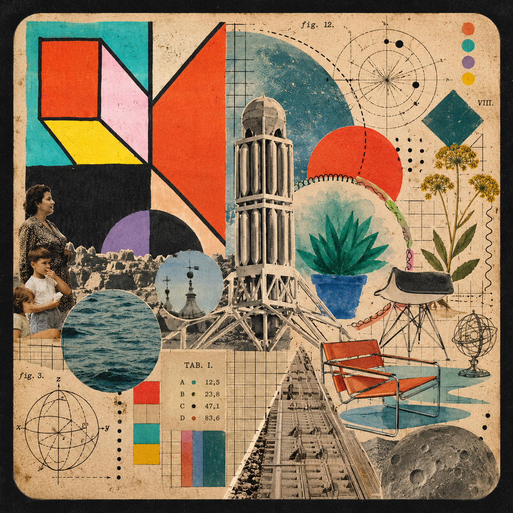

Território de investigação fora do briefing — código, sistemas generativos e visão computacional, feitos por curiosidade e sustentados por uma pergunta de cada vez: o que acontece se eu tentar isso?

Não é sobre avaliar imagem — é sobre um problema mais amplo: hoje gerar deixou de ser o gargalo, julgar é. Uma investigação sobre quais critérios tornam uma ideia original em vez de "aislop".
Ver experimento →
Rastros de tinta que seguem o movimento do mouse com atraso e ruído — cada traço carrega sua própria inércia, criando uma caligrafia que ninguém desenhou de propósito.
Ver experimento →
Campo de partículas guiado por ruído de Perlin, reagindo ao brilho captado pela webcam em tempo real — um estudo iniciado a partir de visão computacional que virou paisagem própria. Pede acesso à câmera.
Ver experimento →
Continuação do estudo de visão computacional: detecção de bordas em tempo real via webcam (Canny), com leitura de densidade de borda e energia de movimento quadro a quadro. Pede acesso à câmera.
Ver experimento →
Gerador interativo de padrões geométricos em p5.js, pensado para produção de peças para redes sociais.
Ver experimento →
Sistema autoral de documentação e operação criativa — o desafio deixa de ser gerar e passa a ser julgar, decidir e manter consistência em escala.
Ver experimento →